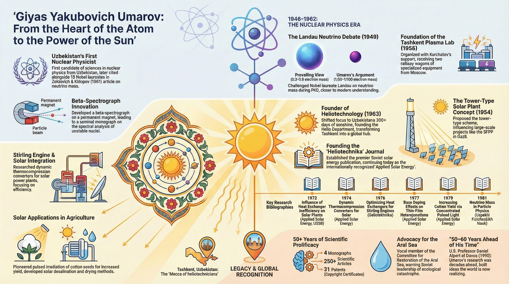

From the Heart of the Atom to the Power of the Sun
Academician, nuclear physicist, and founder of heliotechnology in Uzbekistan. His 1971 research on aquifer thermal energy storage predated Western developments by two years and was recognized by Lawrence Berkeley National Laboratory as the starting point for an entire field.

Giyas Yakubovich Umarov (1921–1988) was one of the most consequential applied physicists of Soviet Central Asia. Across a five-decade career, he achieved something exceedingly rare: he made world-class, independently verifiable contributions in three distinct scientific domains—nuclear physics, heliotechnology, and agricultural biophysics—while simultaneously building the institutional infrastructure that sustained these fields in Uzbekistan long after his death.
In 1949, debating Lev Landau himself at Moscow State University, Umarov correctly argued that the neutrino mass was no more than 1/50 to 1/100 of the electron mass—a position later vindicated and cited alongside 13 Nobel laureates in Zeldovich & Khlopov's landmark 1981 paper. He organized a beta-spectroscopy group at JINR Dubna, and established a plasma laboratory in Tashkent under Kurchatov's direction. His final work before his death focused on tokamak plasma equilibrium—the same problem that remains central to fusion energy today.
As early as 1954, Umarov proposed a tower-type solar power plant with a heliostat field—a design concept that would become the basis of modern Concentrated Solar Power (CSP). He was the driving force behind the Large Solar Furnace near Tashkent (completed 1987), founded the journal Heliotechnika (published internationally as Applied Solar Energy), and authored the definitive monograph Theory and Calculation of Heliotechnical Concentrating Systems (1977).
His 1971 paper with Rabbimov and Zakhidov on storing solar energy in sandy-gravel aquifers gave the Soviet Union a two-year priority over comparable Western work. The 1978 DOE-sponsored workshop at Lawrence Berkeley National Laboratory explicitly cited this research as the "starting point" for the entire field of Aquifer Thermal Energy Storage. Simultaneously, his PCSR (Pulsed Concentrated Solar Radiation) technique for pre-sowing seed treatment was proven to increase cotton yields by 8–15% and was adopted by Indian researchers at CSMCRI Bhavnagar.
What makes Umarov exceptional is not merely the breadth of his contributions, but their interconnection. The mathematical rigor he developed in nuclear spectroscopy directly transferred to his thermal modeling of aquifers. His understanding of particle physics informed his work on photon-driven biological stimulation. And his institutional vision—founding journals, supervising 54 dissertations, securing 31 patents—created a self-sustaining ecosystem of research that outlived him.
He was, in the most precise sense, a scientific architect: a man who built not just theories but the institutions, instruments, and human capital that turned theories into reality.
Explore each domain of Umarov's five-decade career in depth, with analysis of primary sources and referenced publications.
Beta-spectroscopy, neutrino mass determination, plasma research at JINR Dubna and Tashkent. The Landau debate of 1949.
Read articleThe Large Solar Furnace, Heliotechnika journal, tower-type solar plants, concentrating systems, and thin-film photovoltaics.
Read articleThe seminal 1971 framework for ATES, recognized by Lawrence Berkeley Lab as the starting point for global seasonal thermal storage.
Read articlePulsed Concentrated Solar Radiation for seeds, solar drying, desalination, biodegradable mulch films, and heated irrigation.
Read articleDynamic converters for solar power plants, heat exchanger optimization, and thermodynamic analysis of Stirling-solar coupling.
Read articleCross-continental scientific lineage from Tashkent to Berkeley, DOE validation, and the continuing relevance of Umarov's work today.
Read article